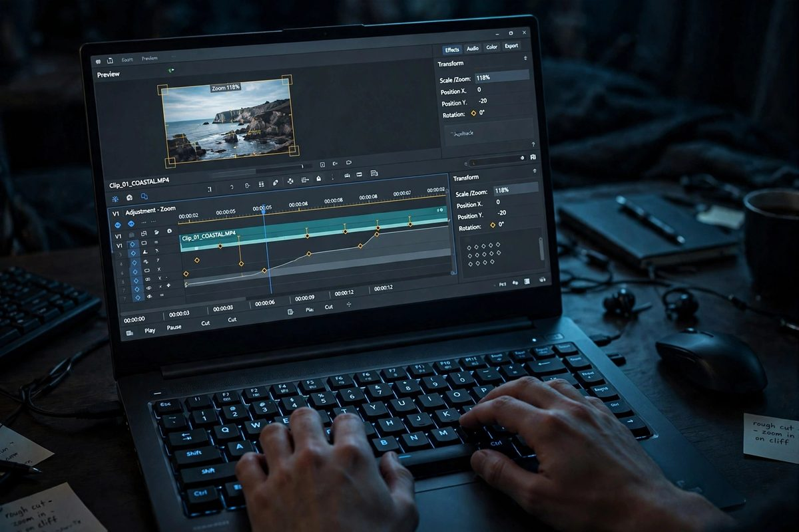

CapCut for TikTok

TikTok decides in the first two seconds whether your video lives or dies. Here is how to edit in CapCut so people stay past the hook — and watch to the end.
Start with the right project setup
Before you import anything, set your project to 9:16 vertical, 1080 × 1920, 30fps. CapCut has a TikTok preset for this, but check it manually — a project started in 16:9 will crop your clips badly later. Import your clips and immediately trim the dead air at the start of each one. On TikTok, the first frame is your thumbnail and your hook combined: if the first frame is you looking at the camera mid-sentence, that is fine; if it is a blank wall while you walk into frame, cut it.
The hook: two seconds to earn the watch
Your hook is the first sentence, the first image, or the first surprising moment. Put it before any introduction — never start with "Hey guys, welcome back". Start with the result ("I turned this old photo into a video"), a bold claim ("Nobody edits like this"), or a question ("Why does this trick work?"). Add big bold text of the hook on screen, because many viewers watch on mute. If your hook needs more than two seconds to land, it is not a hook yet — rewrite it shorter.
Pacing: cut more than you think
TikTok rewards fast pacing. A good rule: no single shot should last more than 3–4 seconds unless something is actively happening in it. Cut out pauses, "umms" and repeated words — CapCut's split tool makes this quick, and the "silence removal" style of editing is standard on the platform. Add a zoom punch or a subtle scale keyframe on every second or third cut to keep the frame alive. When you watch your edit back, any moment you feel bored is a moment your viewer will swipe away — cut it.
Captions and text on TikTok
Add auto captions to every talking video. Use the word-by-word highlight style in a bold font, positioned in the lower third but above TikTok's own buttons — roughly the middle-lower area of the frame. Keep captions to two or three words per line so they stay large. Add one extra text element for the hook itself, in a different colour, so it stands out from the captions. And remember the safe zones: TikTok covers the right edge with like and comment buttons and the bottom with the caption, so keep important text away from both.
Sound and trending audio
Sound is half the video on TikTok. Use a trending sound when it fits your content — TikTok's algorithm notices — but do not force a popular sound onto an unrelated video. In CapCut, you can add the trending audio after exporting, inside TikTok itself, which is the reliable way to attach the sound properly. If you use your own voice, record it cleanly and add a low-volume music bed underneath. Cut your clips to the beat of the track, and let the music drop land on your best moment.
Exporting for TikTok
Export at 1080 × 1920, 30fps, high bitrate (12–20 Mbps), MP4. Do not use TikTok's in-app editor after exporting from CapCut — every extra edit re-compresses the video. Upload on Wi-Fi when possible, and post from the TikTok app rather than scheduling tools when you can, since native uploads sometimes get better reach. After posting, do not delete and re-upload if the first hour is slow; the algorithm often takes time, and re-uploads can split your audience.
Frequently asked questions
What is the best video length for TikTok?
For most creators, 15–45 seconds performs best. Long enough to deliver value, short enough to keep retention high.
Should I use CapCut templates for TikTok?
Yes, for trending formats. But change the music or the hook so your version does not look identical to thousands of others.
Why is my TikTok video blurry after upload?
Usually a low-bitrate export or a weak upload connection. Export at high bitrate and upload on Wi-Fi.
Download CapCut — official app
Get the real CapCut free from your official app store. No modified files, no risk.
Try the tools
Aspect Ratio Calculator
Presets for TikTok, Reels, Shorts and YouTube. Enter one side and get the matching resolution instantly.
Bitrate & Export Size Calculator
Work out how big your exported video will be from its length and bitrate — or the bitrate for a target size.
Caption Timing Helper
Paste your script and split it into timed caption lines with start and end timestamps, ready to use.
Template Idea Generator
Pick a niche and a mood and get a complete edit idea: hook, style, transitions and music vibe.
More guides
 What Is CapCut Mod APK?
What Is CapCut Mod APK? CapCut Premium vs Free
CapCut Premium vs Free Is CapCut Mod APK Safe?
Is CapCut Mod APK Safe? How to Install CapCut Officially
How to Install CapCut Officially Best CapCut Templates in 2026
Best CapCut Templates in 2026 Auto Captions in CapCut
Auto Captions in CapCut
Keyframe Animation in CapCut CapCut Transitions Tutorial
CapCut Transitions Tutorial Best Video Quality Settings
Best Video Quality Settings Best Export Settings in CapCut
Best Export Settings in CapCut CapCut for Instagram Reels
CapCut for Instagram Reels Text Effects in CapCut
Text Effects in CapCut Background Removal in CapCut
Background Removal in CapCut Speed Ramping in CapCut
Speed Ramping in CapCut Filters and Effects in CapCut
Filters and Effects in CapCut Audio Editing in CapCut
Audio Editing in CapCut CapCut vs KineMaster
CapCut vs KineMaster CapCut for Beginners
CapCut for Beginners Trending Edits Tutorial
Trending Edits Tutorial